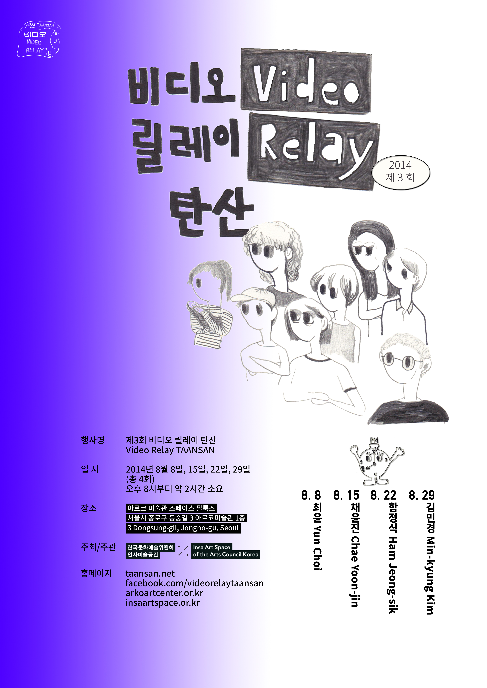
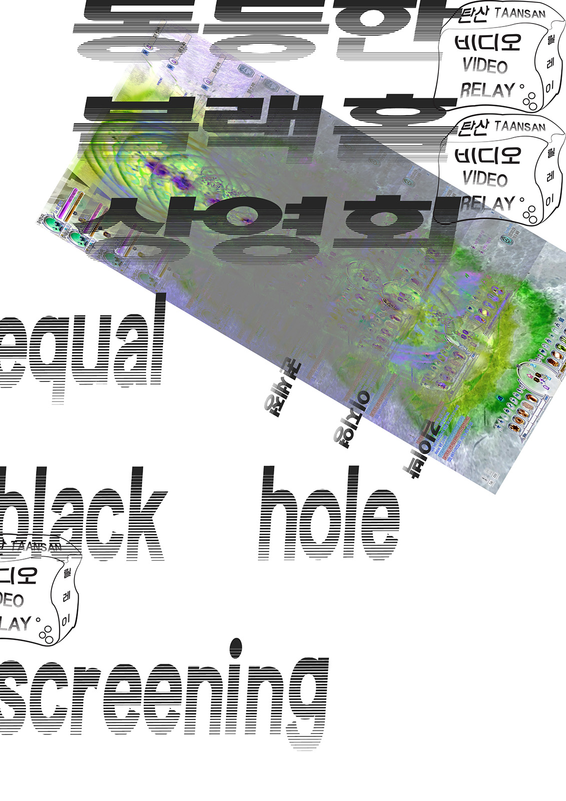

- 제3회 비디오 릴레이 탄산 | 3rd Video Relay TAANSAN
- 일시: 2014. 8. 8/ 8. 14/ 8. 15/ 8. 22/ 8. 29
- 참여작가: 김민경, 김이박, 권세정, 이지영, 최윤, 채윤진, 함정식
- 주최: 비디오 릴레이 탄산, 인사미술공간, 한국문화예술위원회, 국립현대미술관
- 포스터 및 리플렛: 이수경, 강정석 (리플렛 다운로드 ->)
- 장소:
- 스페이스 필룩스
Space FEELUX
서울시 종로구 동숭길 3 아르코 미술관 1층 - http://www.insaartspace.or.kr/nr/?c=1
- 국립현대미술관 서울관 멀티프로젝트홀
MMCA Seoul Multi-Project Hall
서울특별시 종로구 삼청로 30 - http://www.mmca.go.kr/exhibitions/exhibitionsDetail.do?menuId=1020000000&exhId=201408060000100
- 스페이스 필룩스
Space FEELUX - 서울시 종로구 동숭길 3 아르코 미술관 1층
- http://www.insaartspace.or.kr/nr/?c=1
- 국립현대미술관 서울관 멀티프로젝트홀
MMCA Seoul Multi-Project Hall - 서울특별시 종로구 삼청로 30
- http://www.mmca.go.kr/exhibitions/exhibitionsDetail.do?menuId=1020000000&exhId=201408060000100
- 2014. 8. 8. 20:00
- 최윤 Yun Choi
- <생쇼 Raw Show Part. 1: Myself>(Photo Slideshow), 58'', 2009
- <생쇼 Raw Show Part. 2: My Father>(Photo Slideshow), 2'17'', 2009
- <NNN>, 6'29'', 2009
- <녹색식물원 Green Garden>, 7'18'', 2013
- <시민의 숲 Citizen's Forest>, 26'26'', 2014
- 2016. 8. 14. 13:00
- 김이박 Kim Lee Park
- <동등한 블랙홀 상영회 equal black hole screening - 김이박 Kim Lee Park>
- 15:00
- 이지영 Jiyoung Lee
- <동등한 블랙홀 상영회 equal black hole screening - 이지영 Jiyoung Lee>
- 17:00
- 권세정 Sea Jung Kwon
- <동등한 블랙홀 상영회 equal black hole screening - 권세정 Sea Jung Kwon>
- 2014. 8. 15. 20:00
- 채윤진 Chae Yoon-jin
- <saurus>, 4'20'', 2011
- <귀동이 Gwi-Dong>, 7'50'', 2011
- <Elegy for the Zoo>, 5'30'', 2012
- <Meat Romance>, 9'38'', 2012
- <Dog Dream>, 10'50'', 2012~2013
- <간장과 장군 general general>, 13'55'', 2014
- 2014. 8. 22. 20:00
- 함정식 Ham Jeong-sik
- <삽 Shovel>, 4'38'', 2009
- <Ring>, 3'39'', 2010
- <앉아서, 서서, 누워서, 걸으며 Sit, Stand, Lie, Walk>, 4'28'', 2011
- <I’m the Best>, 3'45'', 2011
- <내게 강 같은 평화 I've Got Peace Like a River>, 3'13'', 2012
- <기도 The Prayer>, 26'17'', 2014
- 2014. 8. 29. 20:00
- 김민경 Min-kyung Kim
- <개인의 동작 Personal Movement>, 48'18, 2014